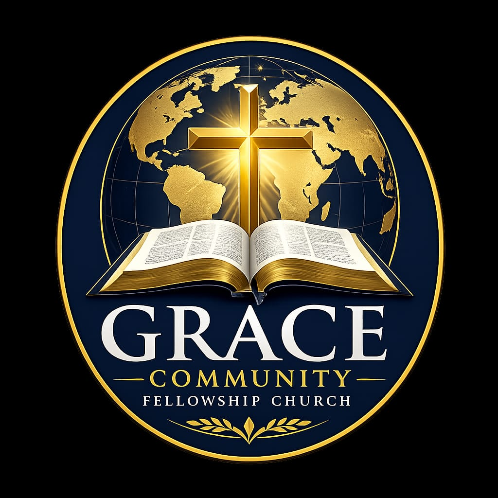

Grace Community Fellowship Church · Kacheliba & Pokot-North, western Kenya
Worship, prayer, and service together.
A church family celebrating Christ, growing in faith, and caring for neighbors across our region.
We center on Jesus Christ, the gospel, and the Bible as God's Word. Our story & beliefs
Our calling
We exist to share the hope of Jesus, build healthy church communities, and serve the region with compassion.
Youth, women, men, and outreach teams partner across Kongelai, TTC, Makany, Abur, Kasitia, and surrounding communities.
We gather as one family—rooted in Christ and sent to love the people around us.
Find your next step
Choose a path; every link opens a page with practical details.
2026 highlights
Snapshot from our full calendar for Kacheliba and Pokot-North.
| Gathering | Kacheliba region | Pokot-North region |
|---|---|---|
| Men’s conferences | 13–16 Aug · GCFC Kongelai | 12–16 Aug · GCFC TTC |
| Women’s conferences | 5–8 Nov · GCFC Kongelai | 2–6 Dec · GCFC TTC |
| Youth conferences | 10–13 Dec · GCFC Kongelai | 16–20 Dec · GCFC TTC |
Visit us
Start at our main Sunday gathering, then connect with regional centers for local support.
At a glance
- Sunday
- 10:00 AM · GCFC Kongelai — children’s ministry & fellowship
- Wednesday
- 6:30 PM — prayer, Bible study, encouragement
- Regional sites
- Makany, Abur, Kasitia, TTC, and more
New here? We would love to welcome you in person. Questions about locations, language, or what to expect are always welcome.
Contact us or read the visit page for FAQs and directions.